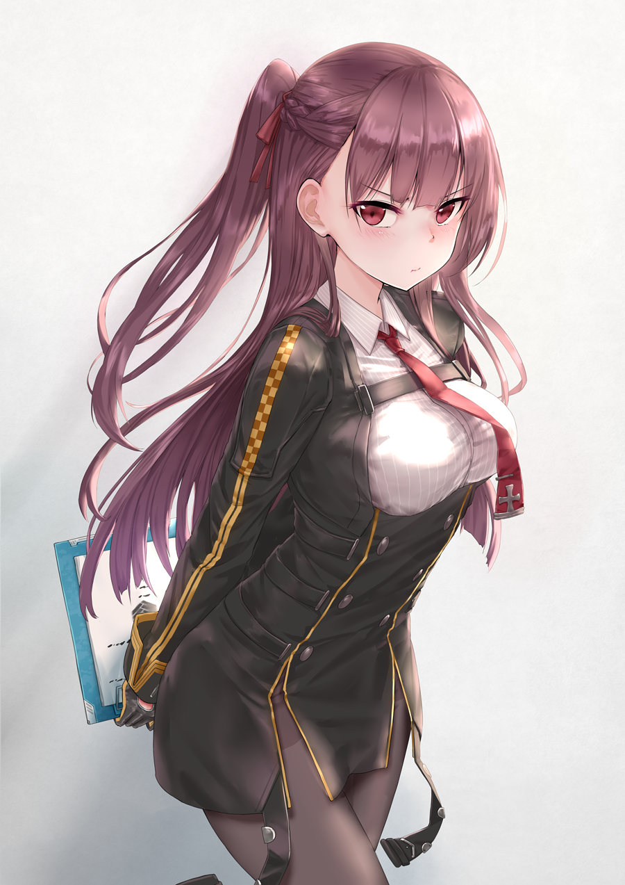
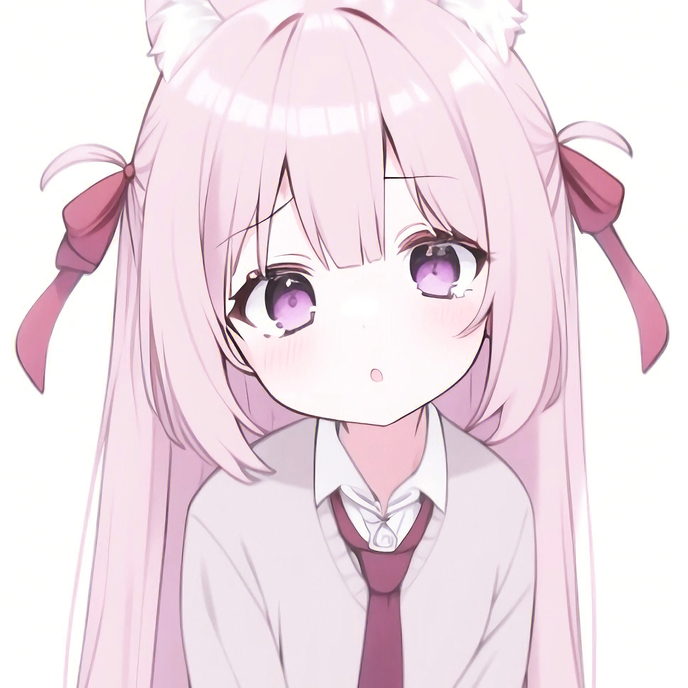
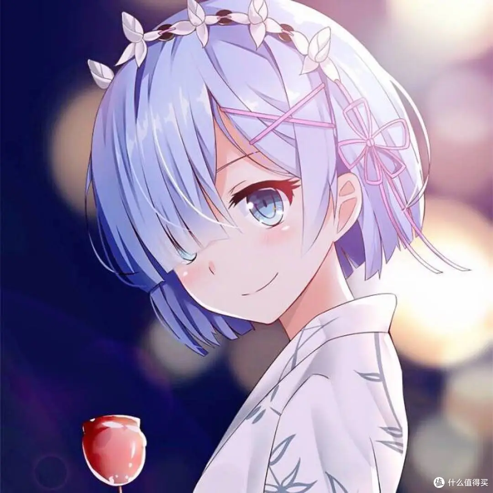
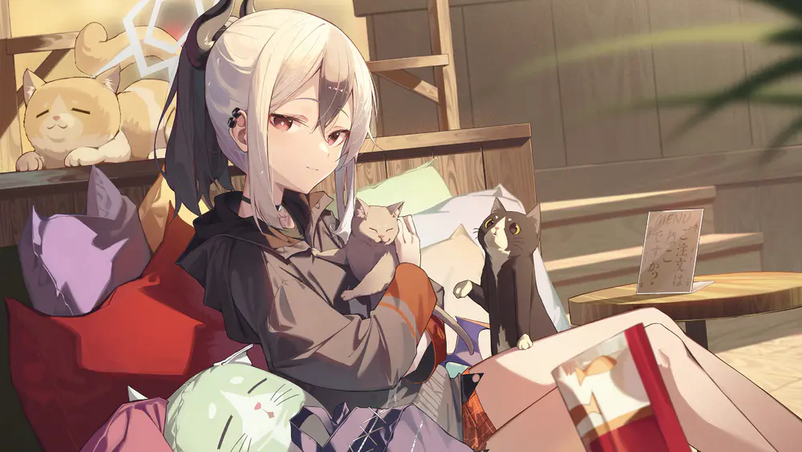

好的设计，不是让人惊叹，而是让人用完之后轻轻说一句：原来可以这么简单。
有时候，最棒的体验不是让人“哇”，而是让人用完之后轻轻地说一句：原来可以这么简单。
S-001 / CREATIVE LIFEFORM
这里收集灵感、设计、漫画感日常，以及一些还没有想明白的问题。请随意逛逛，记得带走一点好心情。

S'S NOTEBOOK
有时候，最棒的体验不是让人“哇”，而是让人用完之后轻轻地说一句：原来可以这么简单。

EASY
把脑内的线团整理一下，再把精力还给真正重要的事。

绕一点路，去看看城市藏在转角里的小彩蛋。
不是把东西删光，而是把最喜欢的那一个留下来。
S'S IMAGE ARCHIVE
ABOUT THE MAIN CHARACTER
白天做产品和设计，晚上收集灵感。比起“成为一个厉害的人”，我更想一直保持好奇，继续把看到的世界讲给你听。
这个博客像一间小小的秘密基地：有设计笔记、城市观察、阅读摘录，还有一些正在孵化的奇怪想法。
查看 S 的当前状态 →LIVE STATUS / AUGUST 2026
SECRET MAIL
新文章、灵感碎片和偶尔出现的可爱通知。不打扰，只路过。